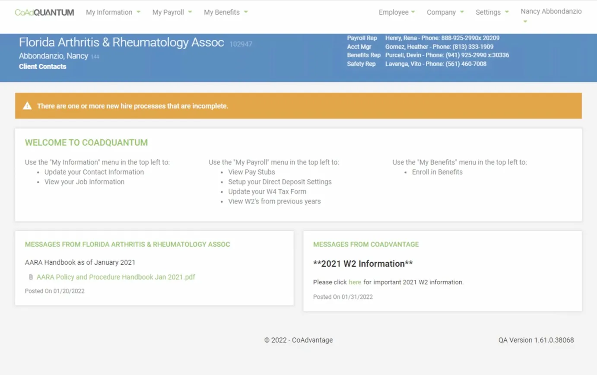
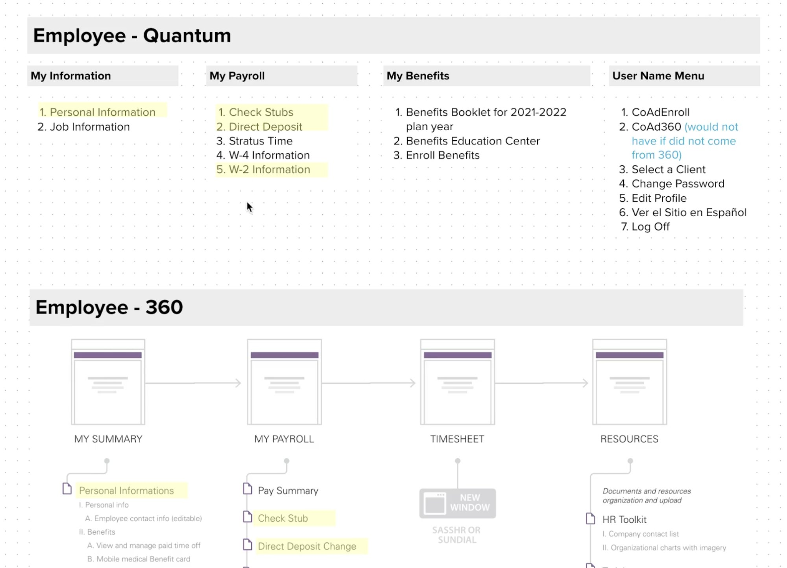
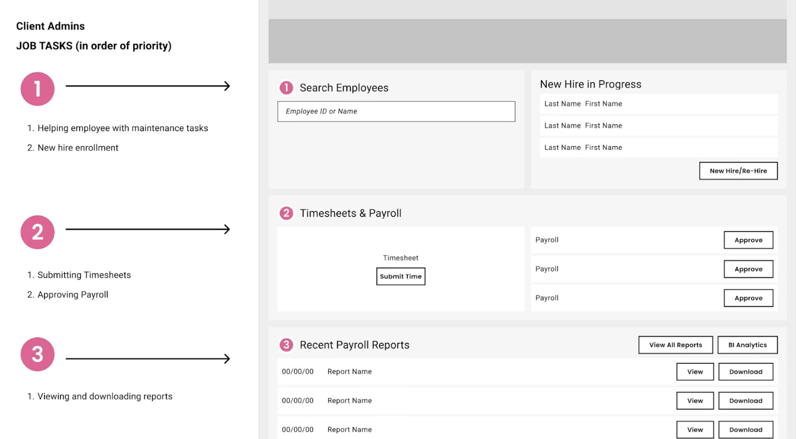

CoAdvantage needed to scale from 105,000 to 250,000 users. Their platform worked, but the UX was generating support calls and slowing adoption. I led the redesign of the core experience and the design system over a 3-month engagement.
My Role
Principal Product Manager
Strategy, research, and delivery
Client
CoAdvantage
HR and payroll platform, SMB segment
Focus
UI/UX Redesign · Design System
Usability research · Roadmap
Scale target
250K+
Users, up from 105,000. Design system built to scale without re-platforming
Timeline
3 mo
Discovery through validated prototype and design system handoff
Target impact
↓ Support
Streamlined workflows positioned to reduce inbound support call volume
00 · Context and Background
105,000 active users, a 250K growth target, and three months to fix the experience
CoAdvantage is an HR and payroll platform serving small and mid-size businesses across the US. The platform worked. The experience did not. Navigation failures were generating support calls, new users couldn't complete basic tasks without help, and the underlying architecture had no shared component library to build on. With a hard target to double the user base, every friction point at 105K was going to get worse at 250K.
I came in as Principal PM through InfoBeans, embedded with CoAdvantage's product team. Three months, discovery through handoff. The goal was to make the platform clear enough that a new user could complete a basic HR task without calling support.

The original CoAdQuantum homepage. No task prioritization, no clear first step. New users needed a 40-slide PDF just to complete onboarding.
My scope
Full lifecycle ownership. Roadmap definition, feature prioritization, usability research, design system architecture, and agile execution across engineering and design.
Every decision had to hold up against one question: does this reduce the support call, or does it not?
The constraint
105,000 active users who could not be disrupted. A 3-month window. An engineering team already stretched. And a product that needed to feel much better without becoming a completely different platform.
That's what made the design system investment non-negotiable from day one.
01 · Problem and Competitive Landscape
The platform had the functionality. The UX was holding it back.
Before defining the roadmap, I conducted a competitive analysis of the HR tech market, benchmarking CoAdvantage Quantum against direct competitors and newer entrants in the SMB segment. The pattern was consistent: the market had moved toward cleaner navigation, better onboarding flows, and self-service-first design. CoAdvantage had the functionality. The experience lagged behind.
I also analyzed support ticket data and interviewed the customer support team to identify where users were getting stuck. That gave me the prioritization framework I presented to executive leadership before any design work began.
The interface hadn't kept pace with the competitive market
Competitive analysis showed newer HR platforms had raised user expectations around navigation clarity and visual hierarchy. CoAdvantage's UI was falling behind on both.
Navigation failures were generating support calls
Support ticket analysis showed users couldn't find key functions without assistance. Every navigation failure became an inbound call. At 250K users that cost was going to scale linearly.
The architecture wasn't built for 2 to 3x growth
Scaling without UX and design system work would amplify every existing problem across a larger user base. There was no shared component library, no consistent interaction patterns, and no scalable foundation to build on.
New user onboarding required too much support involvement
Self-service gaps at the onboarding stage meant new users were dependent on the support team during the most critical adoption window. That was expensive and didn't scale.
02 · Research, Strategy, and Agile Delivery
Three phases from competitive analysis through validated handoff
I organized the work into three phases, each with specific research and delivery outputs. Support data shaped Phase 1 prioritization, and usability research with real users drove the later refinements.
Phase 1
Competitive Analysis, Prioritization, and Roadmap
Define what to build, in what order, and why: grounded in competitive data and internal support ticket analysis
What I did
Conducted competitive analysis of the HR tech SMB landscape, benchmarking CoAdvantage against direct competitors on navigation, onboarding, and self-service capability
Analyzed support ticket patterns to identify the highest-volume friction points driving inbound calls
Defined and presented the product roadmap to executive stakeholders with a prioritization framework tied to the 250K growth target
Ran sprint planning, backlog grooming, and delivery milestone definition across engineering and design
Prioritization framework presented to leadership
Business impact: which improvements directly support the 250K growth target and reduce support cost?
User friction: which pain points generate the most ticket volume?
Technical feasibility: what ships in 3 months vs. gets backlogged?
Competitive parity: where is CoAdvantage visibly behind market expectations?
Phase 2
UX Redesign and Design System
Redesign core flows and build a shared component library that scales to 250K users without re-platforming
What shipped
Customizable homepage dashboard improving daily task visibility and reducing navigation-driven support calls
Overhauled HR workflow templates cutting onboarding time and new-user drop-off on core tasks
Scalable design system with shared component library enabling consistent UI patterns across the platform
How I led it
Led product definition with an associate designer, ensuring every design decision connected to a validated user need or a specific business goal from Phase 1
Partnered with engineering to define design system architecture before any component work began
Presented design direction to executive stakeholders at each sprint review with impact rationale

IA sitemap comparing the old Employee-Quantum navigation against the redesigned Employee-360 architecture. Yellow highlights show items restructured or removed based on support ticket analysis and usability findings.

Annotated wireframe mapping HR Admin job tasks by priority to redesigned dashboard sections. The numbered hierarchy came directly from support ticket volume data, not assumption.
Redesigned HR Admin dashboard. Task sections numbered by priority, quick actions surfaced at the top, payroll approvals and employee search leading the layout.
Phase 3
Usability Research and Validation
Test with real users, synthesize findings, present recommendations before any development investment is made
What I did
Planned and conducted in-depth user interviews across HR admin and employee personas to identify pain points in the redesigned flows
Led high-fidelity prototyping and iterative usability testing sessions, synthesizing findings into a prioritized revision list
Presented recommendations to executive stakeholders with task completion data and failure mode analysis before any engineering investment was made
What the research confirmed
Dashboard customization improved perceived control and daily return behavior across both HR admin and employee personas
Revised workflow templates reduced time-to-completion on the three highest-volume HR tasks identified in Phase 1 support data
Design system patterns were understood consistently across different user personas, validating the component library before build
03 · A Hard Call
The dashboard redesign almost launched without the most important user
Early in Phase 2, the redesign work was focused almost entirely on the HR Admin persona. That made sense on paper: HR Admins drove the most support tickets, had the most complex workflows, and were the primary stakeholder pushing for the project. The employee self-service flows were treated as secondary.
In usability sessions, I kept seeing the same thing: employees were getting lost faster than HR Admins, not slower. The old platform's homepage gave HR Admins a dense but navigable menu. For a first-time employee trying to find their pay stub or set up direct deposit, it was a dead end. They had no way to orient themselves without calling someone.
The situation
The employee self-service dashboard was scoped as a lighter version of the HR Admin redesign. Same information hierarchy, simplified. But usability sessions showed employees were not struggling with complexity. They were struggling with discoverability. Their top three tasks (pay stubs, direct deposit, W-4) were buried under navigation menus built for administrators.
My recommendation
Redesign the employee homepage around a separate task hierarchy, surfacing the three highest-volume employee tasks directly on the dashboard. I brought the usability findings and support ticket data for employee-originated calls to the product owner and made the case for absorbing the additional scope in the same sprint.
The recommendation held. The employee dashboard shipped with its own task priority structure, distinct from the Admin layout.
04 · Outcomes and Business Impact
Three months. Discovery through handoff. Every deliverable validated before engineering touched it.
This was a design and research engagement, not a launch. No post-launch data exists because the build phase began after the engagement closed. What was delivered was a validated, research-grounded redesign and a scalable design system, handed off with full documentation so engineering could start building without a discovery phase of their own.
The honest measure of success here is the quality of what went into the handoff, not post-launch metrics we didn't have access to.
250K+
User scale the architecture is built for
Design system and modular UX built to support 2 to 3x growth without re-platforming core workflows or disrupting the 105K users already on the platform.
3
Distinct user personas, each with their own dashboard hierarchy
HR Admin, Client Admin, and Employee flows each got a task-prioritized homepage grounded in support ticket data, not design convention.
↑
Task completion in usability testing
Revised navigation and workflow templates improved time-to-completion on the three highest-volume HR tasks identified in Phase 1 support data. Validated before any engineering investment.
✓
Engineering handoff with no ambiguity
Comprehensive design documentation and a shared component library meant the engineering team could begin building immediately. No additional discovery sessions required.
05 · Reflection
What a 3-month engagement taught me about speed, scope, and research timing
CoAdvantage was a compressed engagement with real constraints: a large active user base that couldn't be disrupted, a growth target that made the work urgent, and a 3-month window that forced hard prioritization calls from day one.
What went well
Executive access enabled fast decisions
Direct access to executive stakeholders from day one meant prioritization decisions were made quickly and stuck. No scope re-litigation mid-sprint.
Design system investment paid off in sprint 2
Spending the first sprint on a shared component library meant the second half of the project moved significantly faster. The upfront cost was worth it.
Support ticket data was the richest research source
More than interviews, support ticket patterns told us exactly where users were failing and how often. Treating the support team as a primary research channel shaped the prioritization framework.
What I'd do differently
Run usability testing earlier in the cycle
Testing happened later than ideal given the 3-month window. Running sessions in week three instead of week eight would have freed up the back half for more iteration.
Map the full user journey before scoping features
A complete journey map upfront would have surfaced workflow dependencies we discovered mid-project and likely changed the Phase 1 prioritization on two features.
Build post-launch measurement into the engagement scope
Without a post-launch phase, validating the redesign's impact on support volume required the client team to set up their own measurement. That should have been scoped as a deliverable from the start.